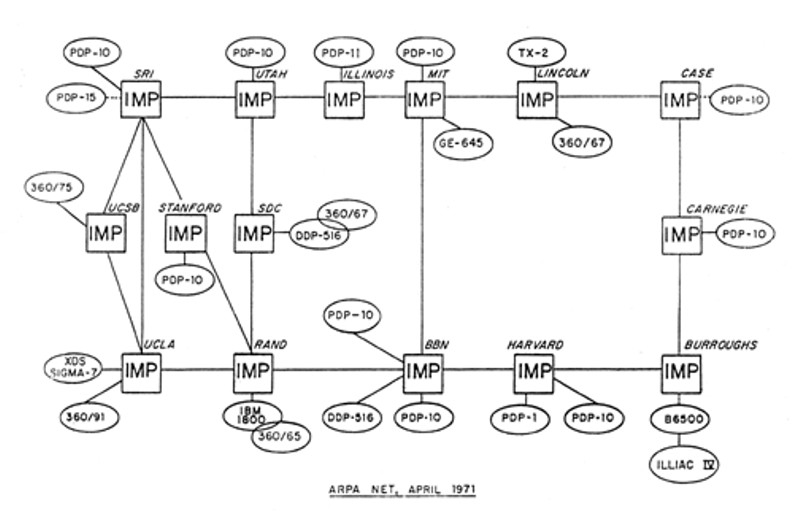
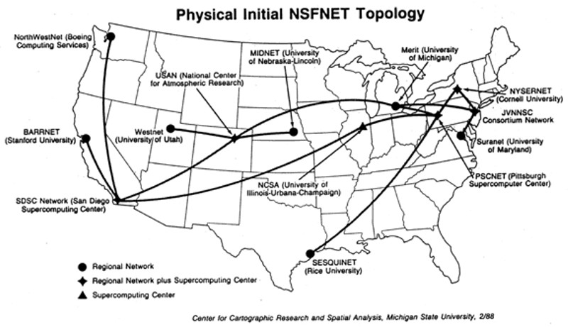

.C.R Licklider writes memos about “Intergalactic Networks” where everyone is
interconnected. He becomes the first head of the computer research program at ARPA.
1964
Simultaneous work on secure packet switching networks is taking place at MIT, the
RAND Corporation, and the National Physical Laboratory.
On-line transaction processing debuts with IBM’s SABRE air travel reservation system
for American Airlines.
1965
With ARPA funding the TX-2 at MIT and the Q-32 in Santa Monica are connected via a
dedicated phone line. Packet switching determined to be most promising model.
ARPA-funded JOSS [Johnniac Open Shop System] at RAND begins operation. Allows for
online computational problem solving
1966
Taylor meets with Charles Herzfeld to discuss one system interconnecting with multiple other
systems.
1967
Wesley Clark suggests that the network be managed by interconnected ‘Interface
Message Processors’ before the major computer.This became the routers as we know them today
Roberts puts together his plan for the ARPANET.
1968
Kleinrock’s team prepares network measurement system at UCLA. [First Network Node].
1969
The first host-to-host connection from UCLA to SRI is made on October 29
1970's
1970
More nodes are added at a rate of 1 per month.
Bob Metcalfe builds a high-speed [100 Kbps] network interface between MIT IMP and
PDP-6 to the ARPANET.
1972
All the network protocols are finished and released.
1973
ICCC demonstration proves packet-switching as a viable.
Bob Kahn and Vint Cerf set about designing a net-to-net connection protocol.
1975
NASA plans own space physics network. These Networks are connected to ARPANET.
1977
Cerf and Kahn demonstrate “internetting” from the Bay Area across the US.
1978
The first small computer and dial up modem services begin to popularize.

1980's
1981
More that 200 computers in dozens of institutions have been connected in CSNET.
Bill Joy incorporates TCP/IP into the UNIX operating system.
1982
Drew Major and Kyle Powell write an action game that is to be played over the network.
1983
The Numbering of Internet hosts struggles to scale with the growth of the internet.
Craig Partridge develops the Domain Name System [DNS]
1985
Regional Feeder networks spring up. This drives major expansion of the interconnected
networks.
1989
Australia, Germany, Israel, Italy, Japan, Mexico, New Zealand, Netherlands and the UK join
the internet

1990's
1990
ARPANET shuts down
Search tools, I.e.. Gopeher etc. appear.
1991
The NSF lifts any commercial restrictions.
1992
The number of networks exceed 7500 and connect more than 1 million computers.